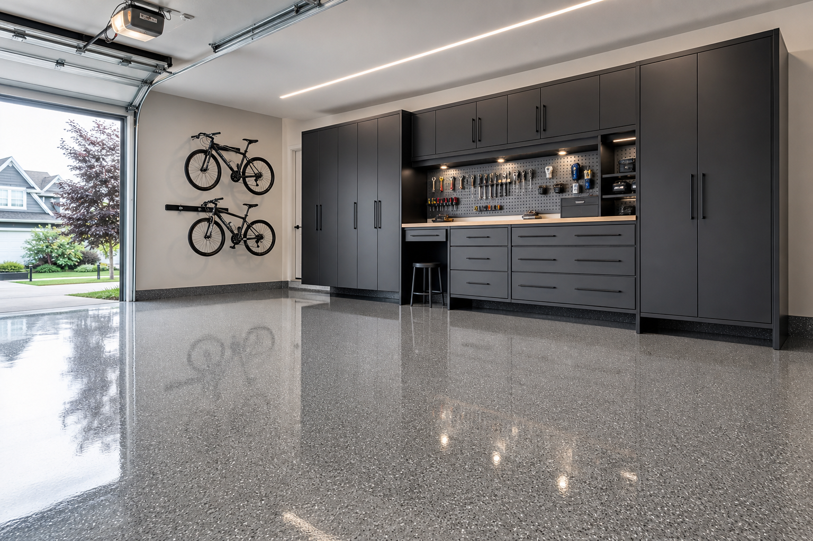

Garage Epoxy Flake Floor Coating: What Homeowners Should Know
A garage epoxy flake floor is one of the most popular ways to upgrade concrete because it hides imperfections, looks intentional, and can be easier to clean than bare concrete—when installed as a full system with serious surface preparation. Garage floor coating contractors near you can walk through prep, layers, and warranty in plain language.
What a flake system typically includes
Most professional “flake” garages are not a single coat. They are usually a process: repair work as needed, mechanical prep, primer or base layer, flake broadcast, and a protective topcoat designed for abrasion and chemical exposure.
If a quote is vague, ask for the steps in writing. A clearer scope is one of the easiest ways to avoid apples-to-oranges comparisons.
Why prep is the real project
Coatings fail when the concrete cannot hold a bond. Oil staining, previous sealers, weak surface profile, and moisture concerns are common reasons projects need additional remediation.
- Mechanical profiling is normal in professional installs.
- Crack repair should be evaluated honestly—some cracks are structural questions.
- Moisture should be discussed if your slab has a history of dampness.
Gloss, texture, and slip resistance
High-gloss finishes can look incredible in photos, but real garages also need a sensible texture plan for wet shoes and winter melt. Your floor coating installer can balance appearance with grip.
How to compare quotes fairly
Ask each concrete coating contractor for the same specification: prep method, number of coating steps, flake density, topcoat chemistry category (as specified by the manufacturer), and what is excluded (moving items, stem walls, expansion joints, etc.).
Maintenance habits that protect the topcoat
Fast cleanup of automotive fluids, avoiding harsh solvents not approved by the manufacturer, and using mats at transition areas can extend the life of a garage coating.
FAQ
Is a flake garage floor the same as paint?
Not usually. Professional systems are multi-layer processes with specific products and performance expectations.
Why does concrete prep matter so much?
Bond strength depends on clean, properly profiled concrete and addressing contamination and moisture risks.